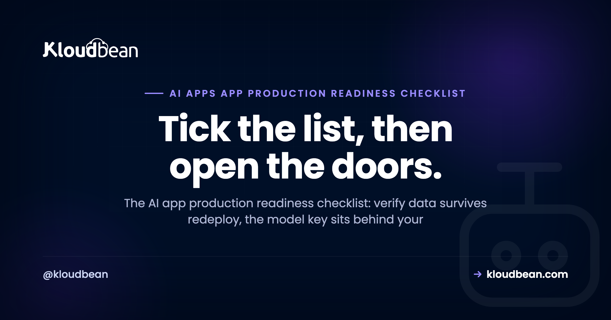

The AI App Production Readiness Checklist: What to Verify Before Real Users Arrive

You shipped something built in Lovable, Cursor, or straight from the OpenAI SDK. It answers on localhost. Now you want real people using it. This AI app production readiness checklist is the list to run before you open the doors. It isn't another essay on why production is hard (that's the flagship on the last mile of vibe coding). It's the specific things to verify so your first real user doesn't become your first incident.
Most of it has nothing to do with your app's features. Those you already finished. It's the plumbing an AI app needs that a demo quietly skips: a key that isn't sitting in the browser, a store that survives a redeploy, and a spend cap so one script can't drain your budget while you sleep.
Run this checklist across eight areas: data and persistence, the model call, cost and abuse control, memory, secrets, observability, reliability, and (only if you're regulated) data residency. The three that prevent the worst disasters are the key behind your backend, a hard spend cap, and a real database instead of SQLite. Everything else lowers risk. Scale how far you go to the stakes.
How to use this AI app production readiness checklist
Work through the groups below, but know they aren't equal. This is the do-this companion to the last mile of vibe coding, the longer read on why an AI app in production behaves nothing like the same app on your laptop. Read that for the why. Use this for the what. And for the full architecture these checks map onto, see the AI app reference architecture.
Two things this page deliberately does not cover, so it stays a checklist and not a book. The general app baseline (a real domain, TLS, error pages, the boring but vital things any web app needs) lives in the prototype to production checklist. Go there for the general list. This page is what's different about an AI app. And for a security-only deep pass, run the AI-built app security checklist alongside it.
Tick top to bottom. The early groups (data, the model call, cost control) are the ones that lose data or money on day one. Short on time? Do those first, then come back for the rest.
The checklist at a glance
Here's the whole thing in one view. Each group has a deep guide that teaches the how, linked in its section below. This table is the scan; the sections are the detail.
| Group | The check, in one line | Where the depth lives |
|---|---|---|
| Data and persistence | State and vectors survive a redeploy; connections are pooled | Managed database, pgvector, pooling |
| The model call | Key on the server, stream the reply, handle 429s | API-key safety, LLM streaming |
| Cost and abuse control | Auth plus rate limits plus a hard spend cap | Rate limiting and cost control |
| Memory and history | History in the database, Redis for the fast layer | Agent memory, managed Redis |
| Secrets and config | Env vars in the dashboard, nothing in the repo | Secrets, environment variables |
| Observability and privacy | Log metadata not prompts; watch tokens, cost, 429s | AI app observability |
| Reliability and ops | Always-on, health check, backups, staging, Git deploy | Off serverless, 503 recovery |
| Data residency (if regulated) | Data in-region; deletion reaches every store | Saudi hosting, PDPL for AI |
Data and persistence: does it survive a redeploy?
If one thing on this page loses you a week of users, it's this one. Start here.
- ☐ Your data lives in a managed database, not SQLite or an in-memory array. On most hosts the app's disk is wiped on redeploy, and a SQLite file goes with it. This is the single most common way an AI app loses its first signups. The fix, with framework examples, is in add a managed database to your app and managed PostgreSQL hosting.
- ☐ Your vector store is persisted, not rebuilt in memory on boot. If you do retrieval, those embeddings need a durable home. The
pgvectorextension keeps them in Postgres next to your normal data, so it's one database instead of two systems to run. See pgvector for AI apps, and for schema choices, production database design for AI apps. - ☐ Connection pooling sits in front of the database. Every request opens a connection, and an AI app under load hits the connection ceiling sooner than people expect. Database connection pooling explains why that limit bites early.
The model call: the key, the stream, the failure path
This is the part that's genuinely new versus a normal web app. Get it right and most AI-specific pain disappears.
- ☐ The API key sits on the server, behind your own backend. The browser calls your endpoint; your endpoint calls the provider. A key that ships to the client is public the moment you deploy. The pattern to copy is in deploy an AI agent without exposing your API keys.
- ☐ You stream the response. A model can take several seconds to write a long answer, and a frozen screen reads as broken. Stream tokens as they arrive, and watch for a buffering proxy that silently breaks streaming in production while it looked fine locally. See LLM streaming in production.
- ☐ Timeouts, retries with backoff, and a fallback for provider 429s and outages. Providers rate-limit you, and they have bad days. Decide now what your app does when the model returns a 429 or times out (retry, queue, degrade gracefully, or show a clear message), not mid-incident. More on the ways these apps fall over: why AI apps fail in production.
Cost and abuse control: so one script can't drain your budget
Your model endpoint spends real money on every call. Treat it like a payment route, because that's effectively what it is.
- ☐ Auth on every route that calls the model. No anonymous access to the endpoint that costs you money. This is the big one.
- ☐ Per-user and global rate limits. A Redis-backed counter caps how fast one user, and everyone together, can hit the model.
- ☐ A hard spend cap at the provider, and a kill switch. Set the monthly limit so the worst case is a stopped feature, not a four-figure surprise. Keep a switch you can flip fast. The full pattern is in rate limiting and cost control for AI APIs.
Memory and history: it remembers after a restart
An agent that forgets everything on restart feels broken to the person mid-conversation with it.
- ☐ Conversation history and agent memory live in the database. In-memory state vanishes the moment the process restarts, which in production is often (a deploy, a crash, a scale event). Durable patterns are in AI agent memory in production.
- ☐ Redis handles the fast, short-lived layer. Sessions, recent context, rate-limit counters, cached answers. Postgres stays the durable record; Redis is the speed in front of it. See managed Redis hosting. Set TTLs so it stays small.
Secrets and config: nothing sensitive in the repo
- ☐ Secrets live in environment variables set in the dashboard, not in code. Per-environment values, what belongs in an env var and what doesn't, all covered in environment variables done right.
- ☐ Nothing sensitive is committed. Check git history too, since a deleted file still lives in old commits. A key that was ever committed is compromised, even after you delete it. Bots scan public repos for exactly this within minutes.
- ☐ You have a rotation plan. You can swap a key without a code change and a redeploy. If rotating a secret means editing code, that's backwards. Secrets management covers the how.
Observability and privacy: you can see what it's doing
You need to debug and watch spend without turning your logs into a liability.
- ☐ You log metadata, not raw prompts. Timing, token counts, the model, the user id, status codes. Prompts routinely carry personal data, and storing them by default creates data-handling obligations you didn't plan for.
- ☐ You watch the signals that actually matter for an AI app: time-to-first-token, tokens in and out, cost per request, and error and 429 rates. Those tell you slow versus broken versus expensive. Full setup in AI app observability.
- ☐ You set a retention window so logs and any stored content age out on their own instead of piling up forever.
Reliability and ops: it stays up and ships cleanly
- ☐ The app is always-on, so there's no cold start on the first request. A model call is slow enough without also waiting for the process to wake up. Why serverless hurts a steady, connection-heavy AI backend: move your AI app off serverless.
- ☐ A health check endpoint that a monitor or load balancer can poll to ask are you alive and get a straight answer.
- ☐ Automatic backups, and you've tested a restore. A backup you've never restored is a hope, not a backup.
- ☐ A staging environment where you test a change before it touches real users.
- ☐ You deploy from Git, repeatably, and you know your 503 playbook for when a deploy goes sideways: fix a 503 after deploying your app.
Data residency and compliance: only if you serve a regulated market
Skip this group if you're a hobby project or your users genuinely don't care where the data sits. But if you serve a regulated market (Saudi Arabia, healthcare, finance, government), it jumps to the top of the list, above almost everything else.
- ☐ Data is stored in-region. For a Saudi audience that means in-Kingdom. The residency and latency case is in hosting AI apps in Saudi Arabia.
- ☐ Deletion reaches every store. A delete request has to clear the database, the vector store, object storage, logs, caches, and backups. Clearing the main table alone leaves copies behind, which is a real compliance gap. Background in Saudi PDPL for AI apps.
How far down do you need to go?
Not every app needs every item, and pretending otherwise just makes you ignore the whole list. So scale the depth to the stakes.
A weekend project or a solo demo with a handful of friendly users: do the three that prevent disasters and stop there. Key behind your backend, a hard spend cap, and a real database instead of SQLite. You don't need staging and full observability for something ten people touch.
An internal tool or an early launch with real, if few, users: add auth on model routes, rate limits, secrets in env vars, always-on hosting, and backups you've tested. Now you're protecting data and money, which is a bigger job than uptime alone.
A funded SaaS, a public launch, or anything regulated: the whole list, plus observability you actually watch, a staging environment, and the residency and compliance group. This is the tier where an outage or a leak has a real bill attached.
If you only do three things before launch, do these: put the model key behind your backend, set a hard spend cap, and move off SQLite. Those three prevent the most common and most expensive AI-app disasters. That's the firm opinion of this whole page.
And the anti-pattern to avoid at all costs: treating a demo as production because it "works." It works in the sense that it responds when you type. It also has the key in the frontend, an in-memory store that resets on the next restart, and no cap on spend. "It responds" and "it's ready for strangers" are different claims. The gap between them is this checklist.
Where Kloudbean fits
The reason this list feels like a chore is that the pieces usually live in different places: one host for the app, another for the database, a third for Redis, a separate console to learn for each. Kloudbean puts them in one dashboard. You run an always-on server (Node or Python, so no cold starts), add a managed Postgres (with pgvector where your plan enables it) and a managed Redis, get built-in S3-compatible object storage with no egress fees, automatic backups, and free SSL, set your secrets as environment variables right in the dashboard, and deploy from Git on every push. You lock the database down by whitelisting your app server's IP, so only your app can reach it and everything else is refused. Staging environments are available for WordPress and Laravel. Plans start from $8/mo. We run our own tools this way, so it's the setup we actually use.
If you serve a regulated market, Kloudbean can run in-region, including in-Kingdom on Google Cloud's Dammam region, which makes it one of the few managed-cloud platforms delivering managed databases with in-Kingdom data sovereignty. It's aligned with frameworks like GDPR and the NCA controls and supports your compliance work. It does not make your organisation compliant on its own; that part is yours.
The honest boundary: managed means the platform handles the server, the stack, SSL, backups, and patching. Your app's code, your prompts, and your data stay yours. Kloudbean won't run model inference for you (call a provider API for that), and full network isolation in a private VPC is an Enterprise capability, not a default. On a standard plan, IP allow-listing is how the database stays off the open internet.
Tick the whole list in one dashboard.
Run your AI app on an always-on server with managed Postgres and Redis, built-in object storage, automatic backups, free SSL, and secrets set right in the dashboard, deployed from Git. No cold starts, so the first request is quick.
Start free at kloudbean.com; see plans on pricing.
Always-on (no cold starts) · Managed Postgres + Redis · pgvector · Object storage · Automatic backups · Free SSL · Env vars in the dashboard · Git deploy · IP allow-listing
FAQ
Is my AI app production ready?
It's ready when the AI-specific basics hold: your data and vector store survive a redeploy, the model key sits behind your backend, every model route has auth and a spend cap, memory is in a database, secrets are in env vars, and the app is always-on with tested backups. If any of those is missing, you have a demo that happens to respond, not a production app.
What's the minimum before launching an AI app?
Three things prevent the worst outcomes: put the model key behind your own backend (never in the browser), set a hard spend cap at the provider, and store data in a managed database instead of SQLite. Those stop a leaked key, a runaway bill, and data loss on redeploy. Add auth on model routes and tested backups next.
Do I need all of this for a side project?
No. Scale the checklist to the stakes. A weekend project with a few friendly users needs the three essentials (key on the server, spend cap, real database) and little else. Save observability, staging, and the compliance group for when real users and real money are involved.
What's different about an AI app checklist versus a normal web app?
The general baseline (database, secrets, HTTPS, backups, deploys) is the same, and it lives in the prototype to production checklist. What's specific to AI: a model key that must stay server-side, streaming the response, provider 429s and timeouts, a hard spend cap because every call costs money, a persisted vector store, and logging that avoids storing raw prompts.
Where should my AI app's API key live?
On the server, behind your own backend, loaded from an environment variable. The browser calls your endpoint, and your endpoint calls the provider. A key shipped to the client is visible to anyone who opens dev tools, and it's effectively public the moment you deploy.
How do I stop my AI app's costs from spiraling?
Require auth on every route that calls the model, add per-user and global rate limits, and set a hard spend cap in the provider dashboard with a kill switch you can hit fast. An open, unauthenticated model endpoint is the most common way an AI app runs up a surprise bill overnight.
Does my vector store need to survive a restart?
Yes, if you rely on it. Embeddings rebuilt in memory on boot disappear on the next restart and cost time and money to regenerate. Persist them, for example with pgvector inside Postgres, so retrieval keeps working across deploys without a rebuild.
Do I need Redis for an AI app?
Not strictly, but it earns its place fast. Redis holds sessions, rate-limit counters, recent context, and cached answers so identical questions don't pay for a fresh model call. Keep the durable record in Postgres and use Redis as the fast layer in front, with TTLs so it stays small.
How do I handle data residency for an AI app?
Store data in the region your users or regulator require, and make sure a deletion request reaches every store: the database, the vector store, object storage, logs, caches, and backups. For a Saudi audience that means in-Kingdom hosting aligned with the PDPL. Data left behind in one or two stores is a common gap.